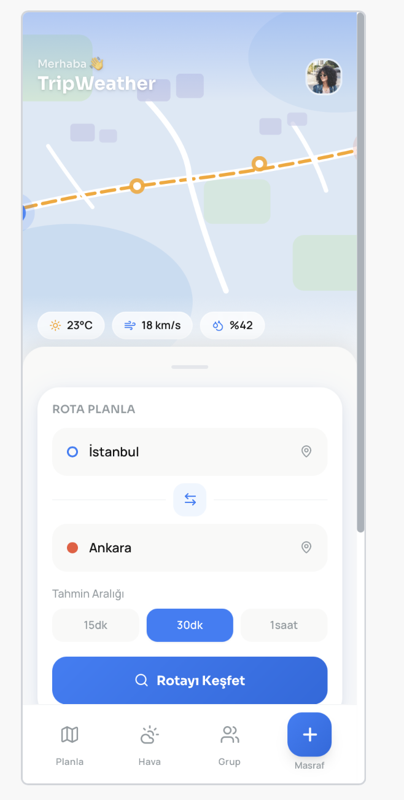
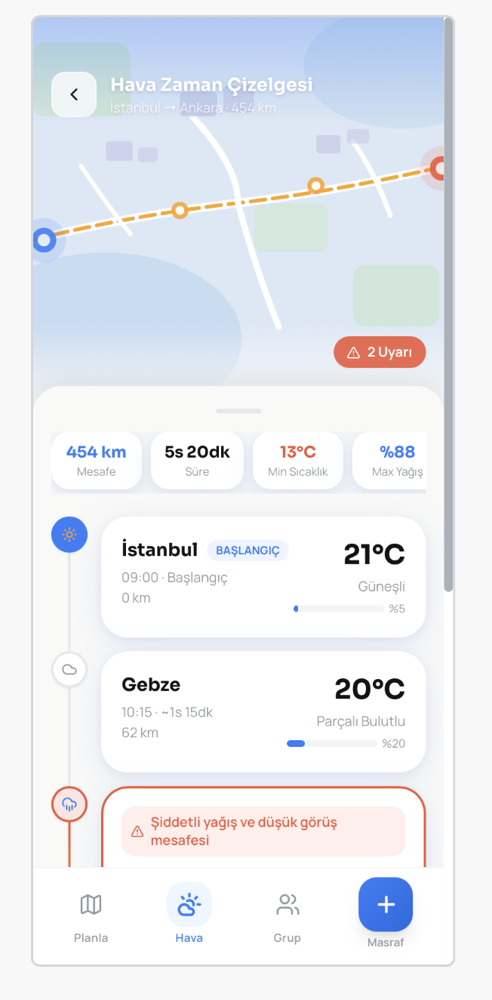
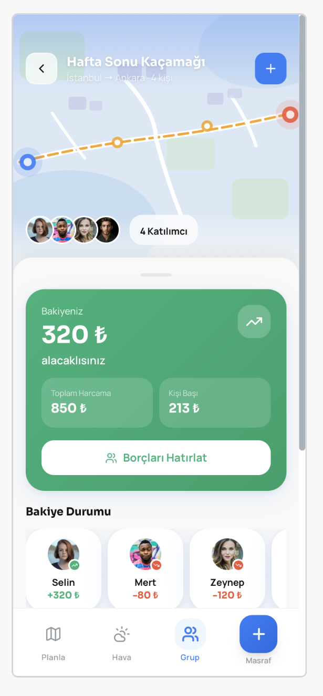
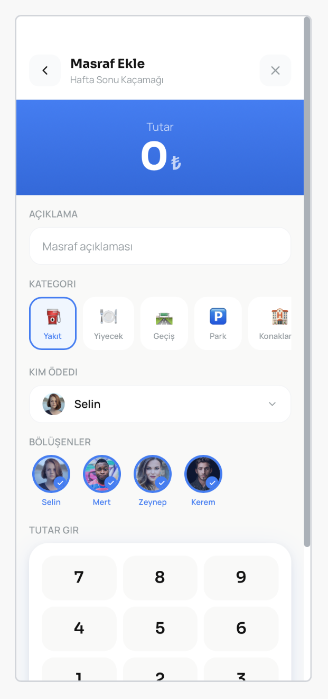

Ne yapar?
Genel bir şehir tahmini değil — tam olarak gideceğin yolun havasını verir. Çıkış ve varış noktanı gir; RideCast rotanı saat saat çözer ve her etabı motosiklet gözüyle puanlar.
Rota boyunca hava
Her noktada sıcaklık, yağmur olasılığı ve rüzgâr. “Şehirde güneşli” değil, “45. kilometrede sağanak” netliğinde.
Sürüş risk skoru
Her etap İyi / Dikkatli / Riskli olarak puanlanır. Yan rüzgâra, ani yağmura veya düşük görüşe hazırlıksız yakalanma.
Ekipman önerisi
Koşullara göre ne giyeceğini söyler: yağmurluk mu, korumalı mont mu, ısı katmanı mı.
Grup sürüşü & canlı konum
Aynı seyahatteki arkadaşlarınla canlı konum paylaş, kimse arkada kalmasın. İsteğe bağlı, varsayılan kapalı.
Masraf bölüşme
Yakıt, yemek, konaklama — dengesiz de bölünür. “Kim kime ne kadar borçlu” en az sayıda ödemeyle kapanır.
Reklam ve takip yok
Hesap oluşturmaz, reklam göstermez, analitik/izleme SDK’sı kullanmaz.
Uygulamadan görüntüler




Konum gizliliği, tek cümlede
Canlı konum paylaşımı varsayılan olarak kapalıdır, yalnızca sen açtığında ve sürüş sürerken çalışır, yalnızca o seyahatin üyelerine görünür, iz/geçmiş tutulmaz ve paylaşımı durdurduğunda hemen silinir. Ayrıntılar: Gizlilik Politikası.
Destek ve iletişim
Soru, hata bildirimi veya öneri için smskery@gmail.com adresine yazabilirsin. Sık sorulan sorular ve sorun giderme adımları için destek sayfasına bak.
In English
RideCast (ride + forecast) is a route-weather and group-riding assistant built for motorcyclists. Enter your origin and destination and RideCast resolves your route hour by hour: temperature, rain probability and wind at every point, a Good / Careful / Risky riding-risk score for each leg, gear suggestions, optional live location sharing with the members of your trip, and fair expense splitting with minimal settle-up payments.
No ads, no tracking, no account required. Live location sharing is off by default, visible only to members of the same trip, keeps no history and is deleted as soon as you stop sharing.
Support: smskery@gmail.com · Support page · Privacy Policy